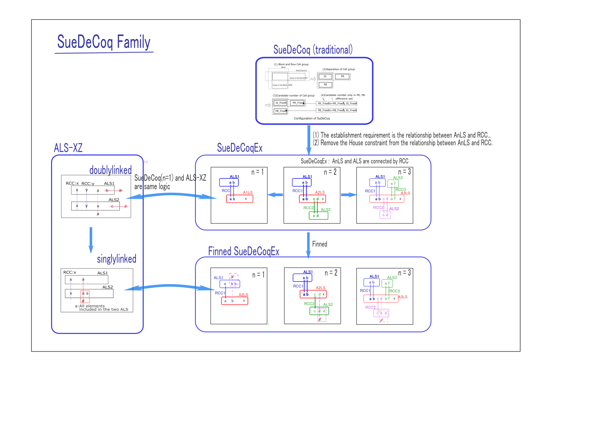

SueDeCoq Family
SueDeCoqEx

SueDeCoq is Locked, which consists of AnLS and ALS.
The definition of SueDeCoq(traditional) used cell placement and digits within the cells.
The SueDeCoq definition has been abstracted, and SueDeCoqEx was reconfigured using ALS and AnLS.
Abstracted algorithms have been simplified and several extended algorithms have been developed.
Additionally, the bit representation of cell placement simplifies the algorithm and code.
Correct code can also be easily generated (bug prevention and bug detection).
The solution obtained with SueDeCoqEx has a complex shape, but is relatively fast.
- SueDeCoq consists of AnLS and ALS.
- SueDeCoqEx : SueDeCoq(traditional) is a special case of n=2 in AnLS. Relax the constraints on House..
- Extend SueDeCoqex n=2 to the cases n=1 and n=3. n=3 is named Franken SueDeCoq.
- SueDeCoqex n=1 is the same algorithm as ALS-XZ doublylinked. Also, the algorithm for "Bent Naked Subset" is basically the same. (probably...lack of confirmation)
- Finned SueDeCoq : Extend SueDeCoqEx to finned. (The concept of extension is similar to the extension of Fish to Finned Fish.)
- Finned SueDeCoqex n=1 is the same algorithm as ALS-XZ singlylinked..
